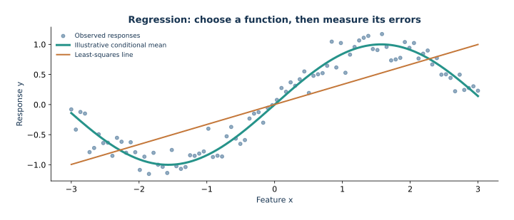
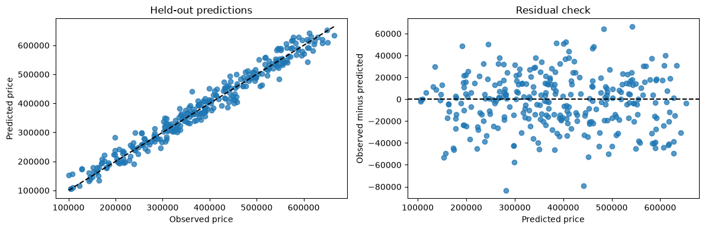

01 — Regression: predicting a numerical response
Regression predicts a number. We will predict synthetic home price from physical measurements and neighborhood. The goal is to connect a prediction objective to a concrete software workflow, not to explain a real housing market.

Illustrative noisy response and two function families. Inspect what a straight line cannot capture; this is not the housing model evaluation.
How the library objects carry the mathematics
A row of X is one input vector and the matching entry of y is its response. Ridge(alpha=...) stores an unfitted model specification; fit(X, y) learns coefficients and the intercept. The trailing underscore in coef_ and intercept_ marks learned state. predict(X_new) evaluates the fitted function on new rows.
Preprocessing has a related two-step interface. fit learns values such as a median, mean, scale, and category vocabulary from its input rows. transform applies those stored values without learning anything new. A Pipeline runs these operations in order: fitting first fits preprocessing and then the estimator; prediction transforms with the already-fitted preprocessing and then predicts. Held-out rows therefore use transform or predict, never a new fit.
ColumnTransformer applies different maps to named numerical and categorical columns, then joins their outputs. OneHotEncoder represents categories by indicator coordinates. GridSearchCV clones and fits the whole pipeline for each candidate and fold, so preprocessing is learned using that fold's training rows. The parameter name model__alpha means the alpha setting on the pipeline step named model.
1. Population prediction and empirical least squares
Assume $\mathbb E[Y^2]<\infty$. For any fixed feature value $X=x$, expand the conditional squared loss around the conditional mean:
$$\mathbb E[(Y-a)^2\mid X=x]=\mathbb E[(Y-\mu(x))^2\mid X=x]+(a-\mu(x))^2,$$
where $\mu(x)=\mathbb E[Y\mid X=x]$. The cross term vanishes because $\mathbb E[Y-\mu(x)\mid X=x]=0$. Therefore the unique squared-loss population target is $f^*(x)=\mathbb E[Y\mid X=x]$ for $P_X$-almost every $x$. A model class restricts which functions can approximate that conditional mean; it does not change the target.
For a design matrix $A\in\mathbb R^{n\times p}$, ordinary least squares minimizes $\|y-A\beta\|_2^2$. Its gradient is $-2A^T(y-A\beta)$, so a minimizer satisfies the normal equations $A^TA\hat\beta=A^Ty$. Geometrically, $A\hat\beta$ is the orthogonal projection of $y$ onto the column space of $A$. Full column rank makes $A^TA$ invertible and the coefficient vector unique. Under rank deficiency, fitted values remain the unique projection, but multiple coefficient vectors can attain it.
2. Load generated data
The CSV is synthetic and pedagogical. Its patterns and noise were chosen for demonstration; the fitted results say nothing about actual homes.
from pathlib import Path
import numpy as np
import pandas as pd
def find_data_file(filename):
"""Search the current directory and its parents for a repository data file."""
for directory in (Path.cwd(), *Path.cwd().parents):
data_path = directory / "data" / filename
if data_path.is_file():
return data_path
raise FileNotFoundError(
f"Could not find data/{filename}. Start Jupyter at the repository root "
"or inside this lecture directory."
)
housing_path = find_data_file("housing.csv")
housing_data = pd.read_csv(housing_path)
print(f"Loaded {len(housing_data)} synthetic rows from {housing_path}")
housing_data.head()
2. Load generated data · computed output
Loaded 1200 synthetic rows from F:\Proyectos\RBF-Machine learning\data\housing.csv
2. Load generated data · computed output
area_m2 bedrooms age_years distance_km neighborhood price 0 178.1819 1 42.7235 24.8766 outer 390826.6849 1 116.1925 3 43.6482 17.8229 central 367962.5603 2 193.8406 4 9.4556 7.3456 central 615257.2151 3 164.0131 3 48.5478 22.3703 outer 377947.9298 4 52.4228 2 47.2325 2.5344 outer 120664.8066
3. Define target and hold out test rows
price is the response; all other columns are features. We set aside the test set before fitting transformations or choosing a model. It estimates performance of the selected procedure on unseen rows from a similar data process.
from sklearn.model_selection import train_test_split
target_column = "price"
feature_data = housing_data.drop(columns=target_column)
price_response = housing_data[target_column]
training_features, test_features, training_response, test_response = train_test_split(
feature_data,
price_response,
test_size=0.25,
random_state=27,
)
print(f"Training rows: {len(training_features)}")
print(f"Held-out test rows: {len(test_features)}")
3. Define target and hold out test rows · computed output
Training rows: 900 Held-out test rows: 300
Random splitting assumes rows are exchangeable. For future prediction over time, or repeated measurements grouped by household, the split should instead reflect that structure.
4. Preprocessing and the Ridge objective
Numerical columns are standardized and neighborhood is one-hot encoded. handle_unknown="ignore" prevents a runtime error for a future category that was absent in training by encoding that category as all zeros. This pattern was outside the training support, so the encoding does not make its prediction trustworthy. The preprocessing belongs inside the pipeline so a cross-validation fold learns means, scales, medians, and categories from its own fitting rows.
Ridge solves $\min_{\beta_0,\beta}\sum_i(y_i-\beta_0-x_i^T\beta)^2+\alpha\|\beta\|_2^2$. With $\alpha>0$, the slope system is positive definite even when predictors are linearly dependent. The intercept $\beta_0$ is unpenalized in scikit-learn; for fixed slopes, minimizing over it centers residuals. Standardizing slopes makes a common penalty more comparable across numerical units. Do not add a constant-one feature when the estimator already fits its own intercept.
from sklearn.compose import ColumnTransformer
from sklearn.impute import SimpleImputer
from sklearn.linear_model import Ridge
from sklearn.pipeline import Pipeline
from sklearn.preprocessing import OneHotEncoder, StandardScaler
numeric_columns = ["area_m2", "bedrooms", "age_years", "distance_km"]
categorical_columns = ["neighborhood"]
numeric_preprocessing = Pipeline(
steps=[
("impute", SimpleImputer(strategy="median")),
("scale", StandardScaler()),
]
)
categorical_preprocessing = Pipeline(
steps=[
("impute", SimpleImputer(strategy="most_frequent")),
("one_hot", OneHotEncoder(handle_unknown="ignore")),
]
)
preprocessing = ColumnTransformer(
transformers=[
("numeric", numeric_preprocessing, numeric_columns),
("category", categorical_preprocessing, categorical_columns),
]
)
regression_pipeline = Pipeline(
steps=[("preprocessing", preprocessing), ("model", Ridge())]
)
Read the pipeline settings through the objective
The code above composes imputation, scaling, category encoding, and a penalized least-squares fit. The table focuses on options used in this lesson; the linked API pages list the complete interfaces.
| Object or setting | Used value | Effect and tradeoff |
|---|---|---|
SimpleImputer |
median for numbers; most frequent for categories | Learns replacements on fitting rows. It retains incomplete rows, while treating replacements as ordinary values. |
StandardScaler |
center and scale numerical columns | Makes one slope penalty comparable across numerical units. One-hot indicators are not scaled by this pipeline. |
OneHotEncoder |
handle_unknown="ignore" |
Makes one indicator per category observed in training. An unseen category maps to zeros and has no learned category effect. |
Ridge |
alpha grid [0.01, 0.1, 1, 10, 100]; fit_intercept=True |
With scikit-learn's convention, minimizes $\|y-b-Xw\|_2^2+\alpha\|w\|_2^2$. Larger alpha shrinks slopes more; the intercept is unpenalized. |
KFold + GridSearchCV |
5 shuffled folds; RMSE scorer; refit=True |
Compares alpha within the training partition and refits the winner on all supplied training rows. Negative RMSE is used because scikit-learn maximizes scores. |
This matches the unnormalized sum-of-squares objective in the derivation. If the data-fit term is written as mean squared error instead, the coefficient on the penalty must be divided by the sample size to describe the same minimizer. The scaling and encoding also define the coordinates in which alpha acts. See the official Ridge, Pipeline, and ColumnTransformer references.
# A fixed one-dimensional dataset isolates the effect of Ridge alpha.
# This illustrates shrinkage; no held-out score selects a setting.
small_X = np.array([[-2.0], [-1.0], [0.0], [1.0], [2.0]])
small_y = np.array([-3.0, -1.0, 0.2, 1.0, 4.0])
small_query = np.array([[-1.5], [0.0], [1.5]])
ridge_comparison = []
for alpha in (0.1, 1.0, 20.0):
small_model = Ridge(alpha=alpha).fit(small_X, small_y)
ridge_comparison.append({
"alpha": alpha,
"intercept": float(small_model.intercept_),
"slope": float(small_model.coef_[0]),
"training_SSE": float(np.sum((small_y - small_model.predict(small_X)) ** 2)),
"predictions_at_-1.5_0_1.5": np.round(small_model.predict(small_query), 3).tolist(),
})
pd.DataFrame(ridge_comparison)
Read the pipeline settings through the objective · computed output
alpha intercept slope training_SSE predictions_at_-1.5_0_1.5 0 0.1 0.24 1.584158 1.154510 [-2.136, 0.24, 2.616] 1 1.0 0.24 1.454545 1.363570 [-1.942, 0.24, 2.422] 2 20.0 0.24 0.533333 12.529778 [-0.56, 0.24, 1.04]
Only alpha changes in this comparison. As the penalty grows, the slope moves toward zero; the training sum of squared errors can rise while the coefficients become less sensitive to the observed sample. This is a mechanism demonstration, not a rule that the largest or smallest alpha predicts best on new data.
5. Select penalty inside training data
For each candidate alpha, five-fold cross-validation fits a fresh copy of the complete pipeline on four folds and scores the fifth. scoring="neg_root_mean_squared_error" makes larger scores better for the search API; negate best_score_ to recover RMSE. refit=True trains the winning pipeline again on every training row. The test rows are outside both operations.
from sklearn.model_selection import GridSearchCV, KFold
training_folds = KFold(n_splits=5, shuffle=True, random_state=27)
regularization_search = GridSearchCV(
estimator=regression_pipeline,
param_grid={"model__alpha": [0.01, 0.1, 1.0, 10.0, 100.0]},
scoring="neg_root_mean_squared_error",
cv=training_folds,
refit=True,
)
regularization_search.fit(training_features, training_response)
selected_alpha = regularization_search.best_params_["model__alpha"]
training_cv_rmse = -regularization_search.best_score_
print(f"Selected Ridge alpha: {selected_alpha}")
print(f"Mean training-fold RMSE: {training_cv_rmse:,.0f} price units")
5. Select penalty inside training data · computed output
Selected Ridge alpha: 0.1 Mean training-fold RMSE: 25,888 price units
Inspect the design matrix you actually fitted
Cross-validation fits clones of the original pipeline. Inspect its selected, refitted estimator rather than assuming the original transformer holds the selected fitted state. Below, each transformed column name aligns with one model input. Numerical columns have been imputed and scaled; category columns are indicators. The displayed rows come from training data, and transform learns nothing new.
fitted_preprocessing = regularization_search.best_estimator_.named_steps["preprocessing"]
example_rows = training_features.iloc[:3]
encoded_rows = fitted_preprocessing.transform(example_rows)
# ColumnTransformer may return a sparse matrix, depending on output density.
if hasattr(encoded_rows, "toarray"):
encoded_rows = encoded_rows.toarray()
print("Raw training rows:")
print(example_rows.to_string(index=False))
print("Transformed model inputs:")
print(pd.DataFrame(
encoded_rows,
columns=fitted_preprocessing.get_feature_names_out(),
index=example_rows.index,
).round(3).to_string())
fitted_scaler = fitted_preprocessing.named_transformers_["numeric"].named_steps["scale"]
print("Training means after imputation:", dict(zip(numeric_columns, fitted_scaler.mean_)))
Inspect the design matrix you actually fitted · computed output
Raw training rows:
area_m2 bedrooms age_years distance_km neighborhood
80.3729 4 54.7933 26.4516 central
192.6229 1 25.5533 9.6696 central
46.1978 4 67.0665 5.0187 central
Transformed model inputs:
numeric__area_m2 numeric__bedrooms numeric__age_years numeric__distance_km category__neighborhood_central category__neighborhood_outer category__neighborhood_residential
945 -0.850 0.692 1.012 1.350 1.0 0.0 0.0
574 1.240 -1.412 -0.469 -0.587 1.0 0.0 0.0
734 -1.487 0.692 1.634 -1.124 1.0 0.0 0.0
Training means after imputation: {'area_m2': np.float64(126.0428888888889), 'bedrooms': np.float64(3.013333333333333), 'age_years': np.float64(34.81788911111111), 'distance_km': np.float64(14.75872388888889)}6. One held-out evaluation
MAE is average absolute error in the target units. RMSE penalizes large misses more. $R^2$ compares with a constant prediction equal to the test mean; it can be negative. None of these scores alone says whether a model is useful for a particular decision.
import numpy as np
import pandas as pd
from sklearn.dummy import DummyRegressor
from sklearn.metrics import mean_absolute_error, mean_squared_error, r2_score
def summarize_regression_errors(actual_values, predicted_values):
"""Return three complementary regression metrics."""
return {
"MAE": mean_absolute_error(actual_values, predicted_values),
"RMSE": mean_squared_error(actual_values, predicted_values) ** 0.5,
"R²": r2_score(actual_values, predicted_values),
}
best_regression_model = regularization_search.best_estimator_
test_price_predictions = best_regression_model.predict(test_features)
median_baseline = DummyRegressor(strategy="median")
baseline_training_input = np.zeros((len(training_response), 1))
baseline_test_input = np.zeros((len(test_response), 1))
median_baseline.fit(baseline_training_input, training_response)
baseline_predictions = median_baseline.predict(baseline_test_input)
mean_baseline = DummyRegressor(strategy="mean").fit(baseline_training_input, training_response)
mean_predictions = mean_baseline.predict(baseline_test_input)
test_metrics = pd.DataFrame(
{
"Ridge pipeline": summarize_regression_errors(test_response, test_price_predictions),
"Training-mean baseline": summarize_regression_errors(test_response, mean_predictions),
"Training-median baseline": summarize_regression_errors(
test_response, baseline_predictions
),
}
).T
test_metrics.round(2)
6. One held-out evaluation · computed output
MAE RMSE R² Ridge pipeline 19515.07 24698.99 0.97 Training-mean baseline 116192.62 139243.47 -0.01 Training-median baseline 116265.35 139351.15 -0.01
The training mean is the optimal constant for training squared loss; the training median minimizes training absolute loss. Comparing both connects the baselines to the objectives. MAE is average absolute error in price units. RMSE uses the same units and gives larger misses more influence; it is at least MAE on the same errors. Curvature in residuals can signal that a nonlinear relationship is missing; changing spread can indicate nonconstant error variance. Neither baseline may use test targets to choose its constant.
7. Residual diagnostics
Residuals $e_i=y_i-\hat y_i$ can reveal curvature, changing spread, or subgroups with systematically different errors. A plot is a prompt for investigation, not proof that assumptions hold.
import matplotlib.pyplot as plt
test_residuals = test_response.to_numpy() - test_price_predictions
figure, axes = plt.subplots(1, 2, figsize=(12, 4))
axes[0].scatter(test_response, test_price_predictions, alpha=0.75)
plot_limits = [
min(test_response.min(), test_price_predictions.min()),
max(test_response.max(), test_price_predictions.max()),
]
axes[0].plot(plot_limits, plot_limits, color="black", linestyle="--")
axes[0].set(
xlabel="Observed price",
ylabel="Predicted price",
title="Held-out predictions",
)
axes[1].scatter(test_price_predictions, test_residuals, alpha=0.75)
axes[1].axhline(0, color="black", linestyle="--")
axes[1].set(
xlabel="Predicted price",
ylabel="Observed minus predicted",
title="Residual check",
)
figure.tight_layout()

8. Coefficients, cautiously
For a scaled numerical input, its coefficient describes a one-standard-deviation change in the fitted prediction, conditional on the other encoded columns. The encoder keeps all category indicators, so each displayed category coefficient is expressed relative to the fitted intercept under Ridge's penalty convention. Pairwise category contrasts are identifiable in this penalized parameterization; individual category values depend on the penalty and coding. Correlation, shrinkage, and omitted factors affect interpretation. These are conditional model associations, not causal effects.
import pandas as pd
selected_model = regularization_search.best_estimator_
encoded_feature_names = selected_model.named_steps["preprocessing"].get_feature_names_out()
model_coefficients = pd.Series(
selected_model.named_steps["model"].coef_,
index=encoded_feature_names,
)
model_coefficients.reindex(
model_coefficients.abs().sort_values(ascending=False).index
).head(12).round(2)
8. Coefficients, cautiously · computed output
numeric__area_m2 129521.59 category__neighborhood_central 45822.40 category__neighborhood_outer -42697.10 numeric__age_years -18543.90 numeric__bedrooms 16387.60 numeric__distance_km -14803.80 category__neighborhood_residential -3125.30 dtype: float64
Takeaways
- Hold out test data before model selection.
- Keep imputation, scaling, and encoding inside the pipeline.
- Compare against a simple baseline and report errors in meaningful units.
- Use residual plots to ask where errors differ.
- Synthetic-data predictions do not establish real-world accuracy or causation.